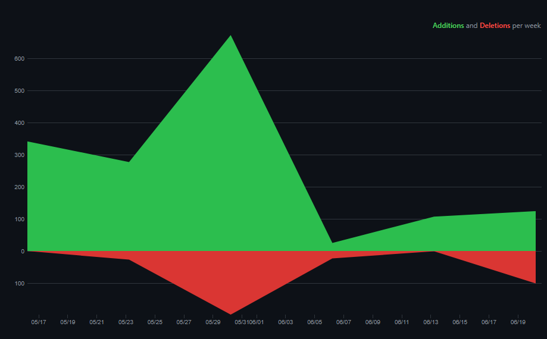
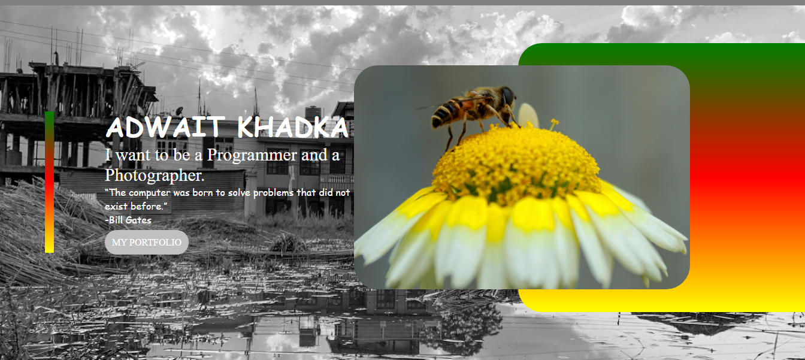
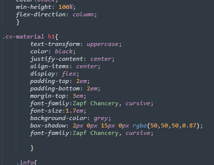
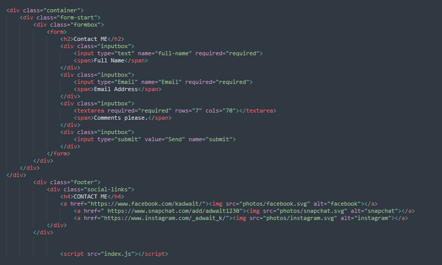
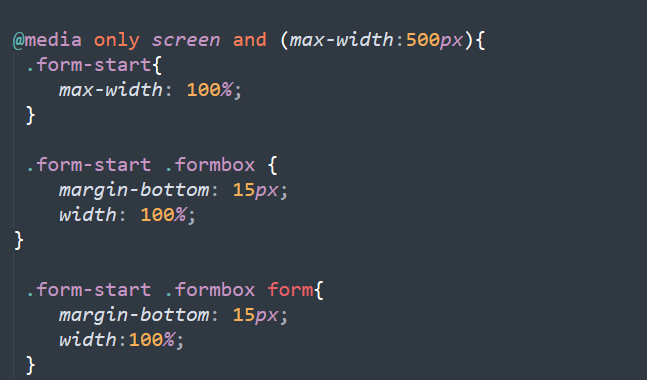
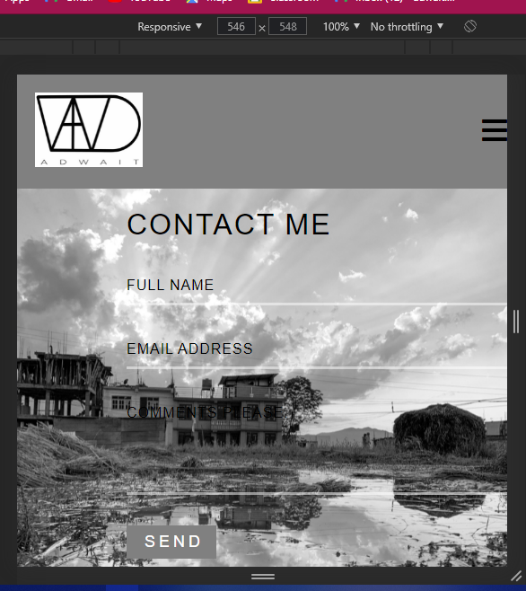

Report
In this report, I will be discussing about the process and the purpose of given assignment. I will be discussing about the HTML and CSS where different tags and ways I have used to create the webpage productive and also different protocols we had to consider while doing it.
Html and CSS are known to be two important core technologies developed for the development of the webpage. Html is especially used for the base structure of the page where CSS is used for the visual representation or basic layout structure of the pages.
While doing this assignment we had different criteria and rules within which we had to complete our assignment. One of the most important and basic rules was plagiarism. We had to complete our tasks by not crossing the limit of the plagiarism. We could reference other works but we had to mention it in the reference. If not, we would get a failing grade. We had to stay in our own field and not use the things that are yet left to teach us. We had to use html and CSS to maximum extent so that we could show our potentiality and the knowledge we gained in the first term. Similarly, we had other criteria too. We were instructed to create our own design and layout and thus using templates or boilerplates like bootstrap, WordPress and others are not allowed. If such things were found, then it would lead to direct failure.
May 16th
I started my work after few days we got it. I was clueless about how i would do it and how I would make my look of the website. I started with the top as most would do. I started to build my index page. I just started randomly and thought of surfing the net for some ideas. I searched and searched but couldn’t find any good ideas. I just started it and just went on. I just went on with the flow. I completed this part very soon but I had difficult time pushing it in GitHub. I had to reinstall Git bash in my computer again to make it work.

May 16th - 23rd
My work started with some ideas I had gathered for my page but was still clueless and just tried many ideas. I couldn’t find out how to make my page responsive. I clearly disagree with online lectures and tutorial sessions because it makes it very difficult to use the facilities, we could have used in the college. But due to the pandemic, we are stuck at home with limited ideas and resources and it is very difficult to gain the required. These days was like add and remove for me as it can be seen in the graph I have presented below.
May 23rd -30th
On this day, I just went for it. I went on for hours searching ideas surfing the internet and I got some inspiration. I love to click photos and part of me says that i want to become a professional photographer. I had the idea that I would use my photos in my website to show that my photos as well it is a good idea as well because I don’t have to search for the content i want to use in the pages. As seen in the screenshot below, I have used my own clicked picture for the background image as well in the image box also I have added my own clicked picture.
May 30th to June 6th
I started to pace up on my work. I was having lots of trouble making the page responsive and hamburger icon properly. I searched for proper guidance regarding it and finally started to implement it. We were only taught the introduction part of it and asked to use is to make hamburger icon with it. This made me question the curriculum provided by the university. I don't know for sure if it was because of the pandemic or what, I think we could only learn very limited content due to the communication gap that was created by the lockdown period. As the slides which was provided by the university for us were limited. I think this was the same for the others too. When I saw the assignment that was given to us for this term, I was shocked to see the contents that were present in the assignment as many contents listed in the assignment were not taught to us and was not available in the slides. Due to this reason we had to surf a lot and even asked the teacher for extra classes for the assignment. For hamburger icon I used the icon which we can find in the font-awesome and referenced it. I used the fa-bars as it is most widely known hamburger icon used in prior pages. After I checked my output was what I expected it would be. My hamburger icon was working properly as I checked using the inspect mode of the web browser

I started to check my work that I had done. I found some minor errors like few tag names which were repeated like font-family and justify-content in the CSS. My CV still doesn’t look the way I wanted it to be so I had further planned on making it the way I want. I further moved to other pages. I started to edit my portfolio images that I wanted to keep. I edited about 10 to 11 photos but I decided I would only use about five images for my portfolio. I also had not decided on the fonts that I would use in my page to make it look more attractive so I had just left space for it to filled later on.
After the completion of the layout of the website, thoughts for the contents were very clear to me in my mind but what I thought couldn’t be implemented. I started with my form and spent almost of time with it. I tried to use the basic tags that were taught during the class but it didn’t go well with the layout of my web. I wanted my form to look simple and interactive. I created a simple form box but added transition for it to look to interactive and used to transform tag to move the span I had placed go upwards using the translateY. To make it look a form that could be used for professional webpages, I also added border bottom color white to the form which made my form more promising. This part took so much of my time I had not thought it would take. For other pages I didn’t have that much trouble making its content responsive but I don’t which part, I had made errors I couldn’t make it perfectly responsive. After days of editing the file, I looked back at my work and saw a simple mistake i.e., I had linked index.css to use it as my body layout where I had forgotten that I had used padding for the main index.html page which got mixed and the codes I inputted got mixed up making my page not responsive. I just created another div tag to address my body layout form-body where I used the same layout as the other pages excluding the padding
  June 17th
My laptop and pc were previously not working smoothly as it used to and I just happened to lose both of them right at the same time. My desktop used to turn on but display was not working and my laptop wouldn’t turn up at. As heavy lockdown period was active, I couldn’t take it to the maintenance shops. This problem made me loose many working days. I finally found a maintenance shop which was not open but gave home services. They told it was due to sudden power off or high electrical surge. After fixing up both my pc, I wanted to continue my work but I again faced the problem of git hub as I couldn’t commit and push the few changes I had done. I surfed YouTube and many other sites for possible solutions but I couldn’t find any until I contacted our module teacher. He gave some ideas but it still was showing the same results. I fixed the problem with the commit but was having problem while pushing the commits as it got stuck on it. I solved this problem by using GitHub desktop app in which I used to push the commits I had committed using the Git bash.

June 22nd
As the deadline of the assignment was not finalized, I wanted to take a break and start after few days. I took a break and started working on blanks I had kept. I placed the links for the contact me on the footer logos. I edited the mistakes I had in it checking in the W3 validator. I had used many incorrect tags which I replaced or corrected. I added the links to the button I had created in the index page along with the correction of the links of the navigation bar. I also edited the cv page where my data was left to input. I had just created the space and inputted what I liked. I replaced it with the real data.
June 30th
After mostly completing most of the part of my assignment, I started to validate my pages using the W3 validation and after page by page I found few many minor mistakes. For example, I had not placed alt tag in the img tags. I had created div tags which was not used and forgotten about them. W3 validator made me check such mistake and correct them properly.
W3 Validation Results
June 30th onwards
I completed my work finally and the result was what I had had expected it to be. It took about 48+ hours to complete this but it's too difficult to give and exact figure because there were different times when I had to search for differecnt codes for doing the assignment further.